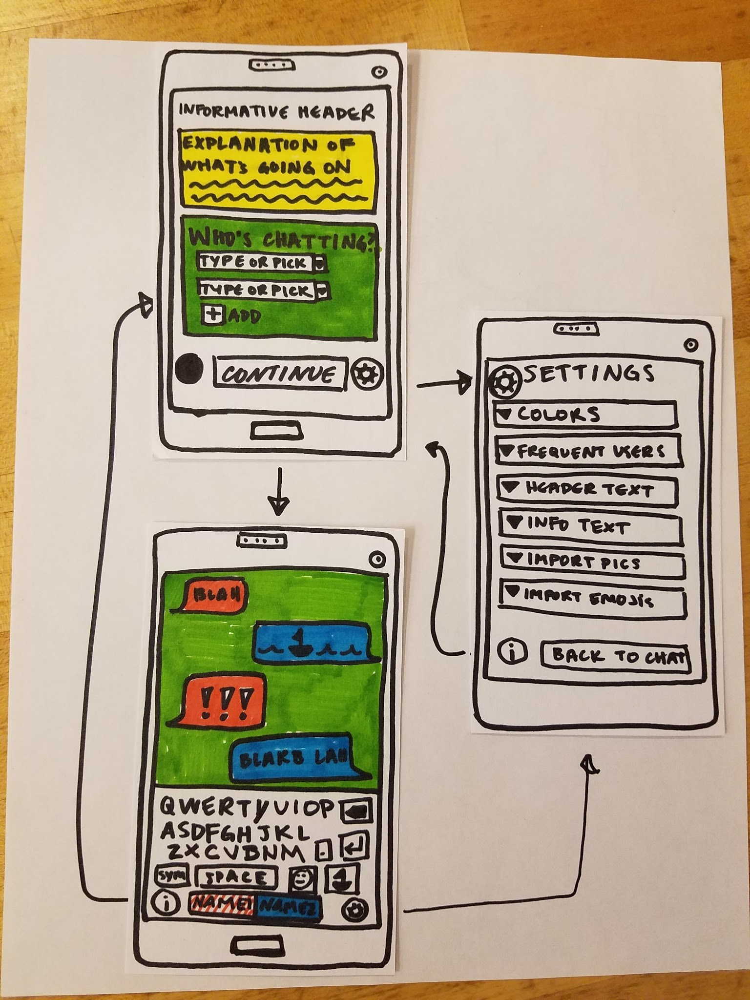

Project Brief
View our project brief as a PDF here.
What is the problem in brief?
Nonverbal communication (communication without spoken word, may use text, images, body language, etc) is frequently useful or necessary (be it for anxiety attacks, audience members, those who cannot, or do not prefer to, communicate with spoken word, etc). However, it often lacks a degree of specificity or finesse, or isn’t well-understood. There looks to be room for a frictionless way to convey information in a conversational manner, non-verbally.
How will your project change the status quo? For whom?
Our product would improve the ability and ease of communication for people who are nonverbal. These users can be people who are either permanently or temporarily non-verbal (i.e. having a panic attack vs. deaf or hard of hearing) as well as those who prefer to communicate nonverbally.
This will allow people who are nonverbal connect and interact with people who communicate verbally in an easier and more positive manner. In addition, our product would effectively inform people about the reasons and nuances of being non-verbal and allow the uninformed people positively interact with people who are nonverbal.
What is (at least) one naïve design idea (rough sketch)? How does this idea address what you see as the core problem?
One initial design idea we have is to make an Android app. It could also take on the form of a web-app and/or iOS app. We are also considering some universal solutions such as Polymer which automatically allows for cross platform existence. All of these implementations will allow fast and easy access to this tool when under the specified circumstances above which is vital for the success of an frictionless interface.
A rough sketch of some screens of our app can be seen below.
The app enables the user to inform another of their circumstances, in order to allow the introduction to the conversation to begin easily. The app would probably allow users to pass the phone back and forth. In this naive design idea, customization is heavily emphasized. This method of communication is an integral part of a nonverbal person’s life, so it might be important for them to be able to express themselves through their method of communication.
What information do you need to collect? How will you collect it? How will you meet your target users, or who can serve as effective proxies for them?
Target users are potentially a large group of people who use nonverbal communication for a variety of reasons. It is possible that we will want to narrow our focus to a particular use case, and also possible that we will be able to create a versatile interface that can be customized for those varied use cases.
We will be able to glean insights from the reviews left by some of the 10 thousand users of Emergency chat, which is a nonverbal (text-based) chat client created for use in critical situations such as anxiety attacks. We can learn a lot from this app and its users, and also direct our focus toward different use cases-- for example, nonverbal communication is not only for emergencies, and having an app called “emergency chat” sets a specific tone and character on the communication.
Additionally, we can look at how people communicate in this space without dedicated tools. For example - when people type out a text, show it to a friend next to them, and then don’t send it, they’re improvising a similar system. In an above-mentioned example of people who become deaf later in life, our digital interface could be compared to an offline counterpart - for example, carrying around a notebook and pen.
How will your team work together to accomplish these goals (as well as your individual learning goals)?
We will all abide to the team contact and support each other to achieve their individual learning goals. We will individually take responsibility of assigned tasks and actively make an effort to maintain the team health.